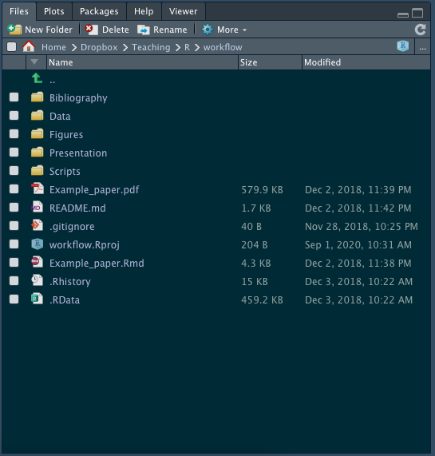

Part 1
We are going to clone my repository on Github into R Studio on your computer. Go to my workflow repository on github. Click the green code button. See there are several options. Feel free to try each of them out:

- On Your Computer (Download):
Download ZIPwill download a zipped file to your computer containing the entire repository. You will need to unzip this (sometimes it’s automatic, as on a Mac), and then it will create a folder on your computer. Open up theworkflow.Rprojfile, which will open the project inR Studio. - On R Studio Cloud: Highlight the url code (or click the copy button on the right). On Rstudio Cloud, click on the arrow on the right of the
New Projectbutton and selectNew Project from GitHub Repository. Paste the url you copied from Github here. This will open the repository as a new project in your cloud workspace - On Your Computer (via Git) ADVANCED: If you have
gitinstalled (see the ultimate guide for help doing this), copy the url code on GitHub. Next, go to R Studio on your computer, clickFile -> New Project -> Version Control -> Gitand type paste the url in the first field. The final field is where on your computer you want to save this folder. It will then open up the project in R Studio.
Part 2
Now that you have the workflow project on your computer (or cloud), let’s explore it. Notice in the file viewer pane in the bottom right, there are several folders and files there. Look at the top of the pane is the file path (this is where you can find this folder on your computer). Mine looks like this, for example:

The nice thing with projects is that any files you open or save are in this folder on your computer!
Part 3
Open up Example_paper.Rmd. This is an example of a file I would use to write a paper. Note the parts of the .Rmd file:
- The yaml at the top
- The text written in markdown
- R chunks scattered throughout
Part 4
I have this set to knit to produce a PDF. For you to do this, you will need to install a distribution of LaTeX. Unless you intend to use LaTeX in the future (for math classes, going to graduate school, or you are a masochist…), we can get around this with a lightweight version we can install inside of R. Run the following code in the console:
install.packages("tinytex")
tinytex::install_tinytex()This will probably take a few minutes to install. Like any package, you only ever have to do this once! Once this is complete, now try to knit Example_paper.Rmd to PDF by clicking the Knit button at the top. View your PDF that pops up!1
Part 5
Now let’s learn more about writing with markdown syntax. Complete this brief tutorial to practice!
Part 6
Just practice working in the Example_paper.Rmd file. Create a new R chunk (anywhere) and write some R code to open data/clean_data.csv (which you can find by clicking through the folders too) and save it as an R object. (You may need to load tidyverse!) Run only this chunk by clicking the green play button at the upper right corner of the chunk. Make sure it works. Using projects to organize your files is much simpler than worrying about your working directory!
Part 7
Find my slides on the class github page. Note there is a lot going on here, because this is a pretty full website. They are in the static/slides folder. Now if you are ever curious how I did something in my slides, you can see the source .Rmd files. Note my slides are written in Xaringan (a special, html-based slides package). Note the slides are quite advanced - I use a lot of html and css formatting to make them pretty!
Part 8
Now we are just exposing you to more .Rmd files. Look at the answer key for 1.4 R practice and download and open the markdown file. Take a look through it and see how it works, then when you are ready, click the knit button. It will make the html webpage (which you can open in any browser) that is identical to the answer key web page I made!
Part 9
Look at the markdown file in this week’s homework assignment. If you want, you can complete your homework using that file.
On R Studio cloud, it may request you to change your popup settings, since it will pop up the PDF in a new window.↩︎